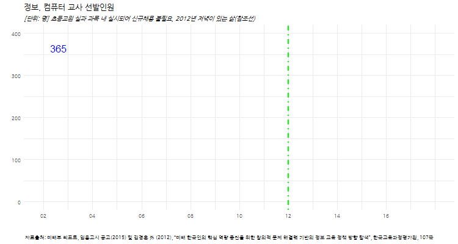

데이터 과학자와 함께 하는 제19대 대통령 선거
컴퓨팅 사고력 SW 교육
1. 컴퓨팅 사고력 교육 1 2
정보, 컴퓨터 교사 선발인원은 2002년 이후 급격히 감소하기 시작하여, 2014년 09월 발표된 “문·이과 통합형 교육과정 개편안”에 초중등 SW교육 강화 포함된 이후 초중등생을 대상으로 컴퓨팅 사고력을 교육할 수 있는 교원을 충원하기 시작했다.
미래부와 교육부가 공동으로 준비하여 발표한 “SW교육 활성화 기본 계획”에 따라 SW정규 교육 기반을 구축하여 체계적인 SW교육 환경을 준비하고 있다.
- 초등 교원: 초등학교는 담임교사를 통해 소프트웨어 교육이 실과 과목 내에서 실시되어 별도의 신규채용이 불필요. 단, 초등실과 과목에 소프트웨어 관련 내용을 포함, 초등컴퓨터 과목은 SW기초소양, 프로그래밍, 알고리즘 관련 단원을 포함하여 운영
- 중등 교원: 시·도 교육청과 협력하여 ‘정보·컴퓨터’ 교사 수요를 파악하고 신규채용, 복수전공연수 등을 통해 연차적으로 확보.
| 연도 | 선발인원 |
|---|---|
| 2002 | 365 |
| 2003 | 311 |
| 2004 | 113 |
| 2005 | 43 |
| 2006 | 60 |
| 2007 | 24 |
| 2008 | 13 |
| 2009 | 14 |
| 2010 | 4 |
| 2011 | 3 |
| 2012 | 0 |
| 2013 | 0 |
| 2014 | 10 |
| 2015 | 0 |
| 2016 | 31 |
2. 정보, 컴퓨터 교사 선발인원 시각화

2.1. 정적 그래프
# 0. 환경설정 --------------------------------------------------------------------------
library(tidyverse)
library(lubridate)
library(ggthemes)
library(animation)
library(extrafont)
loadfonts()
# 1. 데이터 가져오기 --------------------------------------------------------------------------
df <- structure(list(year = c(2002,2003,2004,2005,2006,2007,2008,2009,2010,2011,2012,2013,2014,2015,2016),
teacher = c(365,311,113,43,60,24,13,14,4,3,0,0,10,0,31)), .Names = c("year", "teacher"), row.names = c(NA, -15L), class = "data.frame")
df$year <- as.Date(paste0(df$year,"-01-01", format = "%Y-%m-%d"))
# 2.1. 정보 컴퓨터 교사 정적 시각화 ------------------------------------------------------------------
ggplot(data=df, aes(x=year, y=teacher, group=1))+
geom_line(size=1.1) +
theme_minimal() +
geom_vline(xintercept=as.numeric(ymd("2012-01-01")), linetype=4, color="green", size=0.9) +
theme(legend.position="none", plot.caption=element_text(hjust=0,size=8),plot.subtitle=element_text(face="italic"),
axis.text=element_text(size=7.5))+
labs(x="",y="",title="정보, 컴퓨터 교사 선발인원",
caption="\n 자료출처: 미래부 리포트, 임용고시 공고(2015) 및 김경훈 外 (2012), “미래 한국인의 핵심 역량 증진을 위한 창의적 문제 해결력 기반의 정보 교육 정책 방향 탐색”, 한국교육과정평가원, 107쪽",
subtitle="[단위: 명] 초등교원 실과 과목 내 실시되어 신규채용 불필요, 2012년 저녁이 있는 삶(참조선)") +
theme(text=element_text(family="NanumGothic"))2.2. 애니메이션 그래프
# 2.2. 정보 컴퓨터 교사 시각화----------------------------------------------------
dlist <- unique(df$year)
ct_plot <- function(i){
ggplot(data=df %>% dplyr::filter(year<=dlist[i]), aes(x=year, y=teacher, group=1, label=teacher))+
geom_line(aes(group=1), size=1.1) +
scale_y_continuous(limits = c(0, 400))+
scale_x_date(breaks=seq(dlist[1], tail(dlist,1) + years(1), "2 year"),
date_labels="%y",limits=c(dlist[1], tail(dlist,1)+years(2)))+
geom_text(data=df %>% dplyr::filter(year==dlist[i]),
aes(x=year, y=teacher, group=1), size=5.5, color="blue", hjust=0, nudge_x=100) +
geom_vline(xintercept=as.numeric(ymd("2012-01-01")), linetype=4, color="green", size=0.9) +
theme_minimal() +
theme(legend.position="none", plot.caption=element_text(hjust=0,size=8),plot.subtitle=element_text(face="italic"),
axis.text=element_text(size=7.5))+
labs(x="",y="",title="정보, 컴퓨터 교사 선발인원",
caption="\n 자료출처: 미래부 리포트, 임용고시 공고(2015) 및 김경훈 外 (2012), “미래 한국인의 핵심 역량 증진을 위한 창의적 문제 해결력 기반의 정보 교육 정책 방향 탐색”, 한국교육과정평가원, 107쪽",
subtitle="[단위: 명] 초등교원 실과 과목 내 실시되어 신규채용 불필요, 2012년 저녁이 있는 삶(참조선)") +
theme(text=element_text(family="NanumGothic"))
}
oopt <- ani.options(interval = 0.5)
saveGIF({for (i in 1:(length(dlist))) {
g <- ct_plot(i)
print(g)
print(i)
ani.pause()
}
for (i2 in 1:20) {
print(g)
ani.pause()
}
}, movie.name="ct_teachers_trend.gif", ani.width = 750, ani.height = 400)